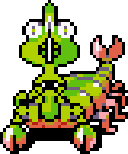
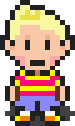
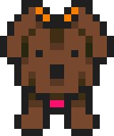
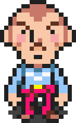
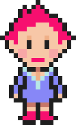

No arquipelágo de Nowhere Islands, caos se espalha depois da invasão da Armada Pigmask, uma misteriosa organização de pessoas usando máscaras de porco. Esse grupo gradativamente constroem um estado de sítio, enquanto fazem experimentos na flora e fauna local, além disso eles introduzem novas tecnologias e infraestrutura para as ilhas.
Em meio a tudo isso, o tímido jovem Lucas vai a procura de seu irmão desaparecido,Claus, junto de seu fiel cachorro Boney, Lucas acaba envolvido em impedir a Armada Pigsmask, junto de Duster e Kumatora
Em Mother 3, existe uma nova mecanica chamada "tempo", em que se o jogador conseguir apertar o botão de confirmação no mesmo tempo da batida da música de batalha (chamada de "heartbeat"), ele consegue dar mais dano.
Abaixo temos uma simplificação da mecânica que você pode jogar clicando no botão "Start", quando começar a música, clique no botão "Hit" para golpear o inimigo, tente fazer 16 acertos para ganhar
Se você errar o "tempo" da batida você perde todos os seus pontos
Se você não conseguir a quantidade mínima de acertos até a música acabar, o jogo para, você também pode parar a música e também o jogo clicando no botão "Stop"
VOCÊ GANHOU

LUCAS
 |
|---|
| Ele é um garoto gentil e honesto |
| Ele se torna forte, determinado e independente |
| Sua comida favorita é omeletes |
| Ele também ama seu cachorro, Boney, e leva ele para passear e brincar frequentemente |
BONEY
 |
|---|
| Cachorro da família de Lucas |
| É um bom garoto |
DUSTER
 |
|---|
| Ele é um ladrão amador |
| Na sua infância, ele estudou várias técnicas de ladrão do seu pai, Wess. |
| Dizem que sua perna torta é porque Wess mandava ele treir muito pesado |
| Ele é geralmente noturno, ficando ativo durante a noite e dormindo durante o dia |
KUMATORA
 |
|---|
| Kumatora ficou orfã muito nova |
| Ela foi criada pelas Magypsies, as quais nomeram-na a princesa do Castelo Osohe. |
| Apesar de sua natureza teimosa, Kumatora está disposta a fazer sacrifícios para conquistar seus objetivos |
| A aparência de Kumatora é mais masculina do que a maioria das garotas |